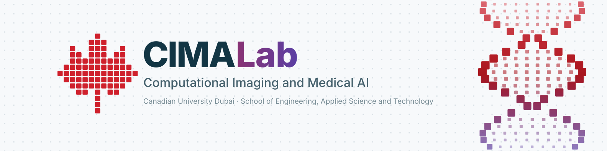

Open by default
Code, model weights and documentation go out under open licences on GitHub. Your work is citable and reusable the day it lands, not two years later.
Join us / Opportunities
CIMA Lab is an emerging research lab at Canadian University Dubai working at the cutting edge of volume electron microscopy, medical image analysis and machine learning for dementia. We are building our first cohort now: postdoctoral researchers, graduate research assistants, thesis and capstone students, visiting researchers and clinical partners.

Why join
The lab is growing, so your work shapes how the group operates. Every project comes with a clear plan, a supervisor and a student owner.
Code, model weights and documentation go out under open licences on GitHub. Your work is citable and reusable the day it lands, not two years later.
Volume electron microscopy stacks and clinical neuroimaging, studied together with the biologists and clinicians who will use the results.
Every project has one student owner and one principal investigator. You run the experiments, write your section of the paper and present the result yourself.
Two Dubai RDI grants back the lab's first research lines, and the lab's plan builds academic links with MBZUAI and Shandong University.
Opportunities
The status pill on each card says where that role stands today. "Expression of interest" and "Planned" mean we want to hear from you now and will match you to a start date, not that a post is already advertised.
Lead a research line in foundation models for microscopy or medical imaging. You set the direction, mentor the students working on it and take first or senior authorship.
Nothing is advertised yet: we collect expressions of interest and match them to grant timelines.
Apply via the formRun experiments, write the code that goes into the release and co-author the paper that comes out of it. The CUD MSc in Artificial Intelligence is the main route in.
You get one PI, one project you are responsible for, and a share of the lab's shared tooling work.
Apply via the formScope your thesis inside one of the lab's research directions, supervised by someone already working on that problem.
You defend with results other people can reproduce from the repository you leave behind.
Apply via the formAnnotation, baselines, tooling and documentation on software the lab uses every day. Well-defined tasks that add up to a named contribution.
Every task has a graduate mentor and a PI attached to it.
Apply via the formJoin a project for a focused stay: joint experiments, a seminar for the group and a paper written with us rather than about us.
We arrange desk space, compute access and a host on the team before you arrive.
Apply via the formOwn compute, continuous integration, releases and the website, so reproducibility is a property of the lab rather than a promise in a paper.
This role is planned and not yet open. Tell us now if it is the job you want.
Register interest via the formBring a question from your own field and co-supervise a project on it, with shared students, shared compute and shared authorship.
Open to SEAST and Health Sciences faculty at CUD.
Apply via the formHospitals, imaging centres and companies with an imaging or data problem. We start with a pilot study with clear success criteria before a larger project.
Data governance and ethics approvals are part of the first conversation, not an afterthought.
Apply via the formHow to apply
The same process applies to every role on this page. If you are not sure which one fits, send the message anyway and say so.
A CV, a short statement of interest naming the research direction and the principal investigator you want to work with, and a link to code or a project you are proud of.
Use the form below, or write to the PI directly. CUD students can propose a thesis or capstone topic scoped inside one of the lab's research directions.
We read everything and reply within a few working days. If it looks like a fit, we set up a short call about the problem itself rather than a quiz.
Contact
One message reaches the whole lab. Pick the topic that fits and, if you have one, a preferred principal investigator.
Fields marked are required. We reply within a few working days.
The lab sits with SEAST on the CUD campus at City Walk. Ask your host to arrange a visitor pass before you come.
CIMA Lab, School of Engineering, Applied Science and TechnologyQuestions
The five questions we are asked most often.
Not for every role. Graduate research assistantships and MSc thesis places run through the CUD MSc in Artificial Intelligence, and undergraduate places run through SEAST programmes, so those are for CUD students. Postdoctoral, visiting researcher, faculty affiliate and partnership enquiries are open to anyone.
The lab holds two Dubai RDI grants, one on 3D reconstruction for volume electron microscopy and one on prodromal and preclinical markers of dementia. Whether a specific position carries funding depends on the grant it sits in and on the university's own processes, so treat every role on this page as an opportunity to discuss rather than an advertised salary.
Student roles are on-site at the City Walk campus, because the work runs on lab compute and involves data that stays where it is governed. Visiting researchers and external collaborators work in a hybrid way around agreed visits.
Python, and enough PyTorch to train a model and debug it when the loss does something strange. Beyond that we care that you can read a paper, reproduce a baseline and write down what you did. Experience with imaging data, segmentation or neuroimaging pipelines helps, but we will teach it.
Yes, as long as it sits inside one of the lab's research directions. Say which direction it belongs to and which PI it fits, and give us a paragraph on the data you would use and how you would know it worked.